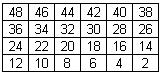

|
Ejercicios
de repaso
|
|
Cadenas,
Matrices y Archivos de texto
|

Objetivos:
-
Que apliques
los conocimientos adquiridos en el último periodo.
-
Que ejercites
la habilidad de hacer frente a los mensajes de error que envía la
herramienta de desarrollo.
-
Que desarrolles
habilidades de sociabilización mediante el proceso de trabajo en
equipo.
-
Que ayudes
a tus compañeros a encontrar la mejor solución a los programas.
.
|

Forma de trabajo:
Actividad en equipos colaborativos
e individual
|

Tiempo estimado:
90 minutos
|

Instrucciones:
-
Intégrate con tu equipo
colaborativo y sigue las indicaciones del profesor.
-
Junto con tus compañeros
de equipo, analiza cada uno de los ejercicios que se presentan a continuación.
Identifiquen, en equipo, cual sería el algoritmo para la solución
de cada uno de los ejercicios. Recuerden documentarlos en sus hojas membretadas.
.....
|
Ejercicio
1
El procedimiento
llena_matriz,
que recibe como parámetro una matriz de enteros de 4 renglones por
6 columnas; y almacena en cada una de las localidades de la matriz un número
consecutivo del 1 al 24 iniciando en la localidad 3,0. Es decir,
después de llamar al procedimiento llena_matriz, en la matriz deberán
estar los siguientes valores:

Ejercicio
2
El procedimiento
imprime_Matriz,
que recibe como parámetros una matriz de enteros de 4 renglones
por 6 columnas. El procedimiento desplegará en pantalla el contenido
de la matriz.
Ejercicio 3
El procedimiento
llena_matriz2,
que recibe como parámetro una matriz de enteros de 4 renglones por
6 columnas; y almacena en cada una de las localidades de la matriz un número
consecutivo par del 2 al 48 iniciando en la última localidad de
la matriz (3,5). Es decir, después de llamar al procedimiento llena_matriz,
en la matriz deberán estar los siguientes valores:

Ejercicio
4
El
procedimiento escribeCadena que recibe
como parámetros una cadena de 50 caracteres y una cadena de 25 caracteres
que contiene la ruta de un archivo de texto. El procedimiento deberá
copiar en mayúsculas y sin espacios carácter por carácter
de la cadena en un archivo de texto.
Por ejemplo:
Si la cadena es: “Hola a
todos”
El archivo de texto deberá
almacenar: HOLAATODOS
Ejercicio 5
El
procedimiento copiaInvertido que recibe
como parámetros una cadena de 25 caracteres con la ruta del archivo
de texto origen y una cadena de 25 caracteres con la ruta del archivo
de texto destino. El procedimiento deberá copiar el contenido
del archivo de texto origen al archivo de texto destino invirtiendo las
letras mayúsculas por minúsculas y las letras minúsculas
por mayúsculas. NOTA: Puedes utilizar las funciones toupper(
) o tolower( ) y te puede servir la tabla de códigos
ASCII.
.
Tabla
de valores ASCII

|